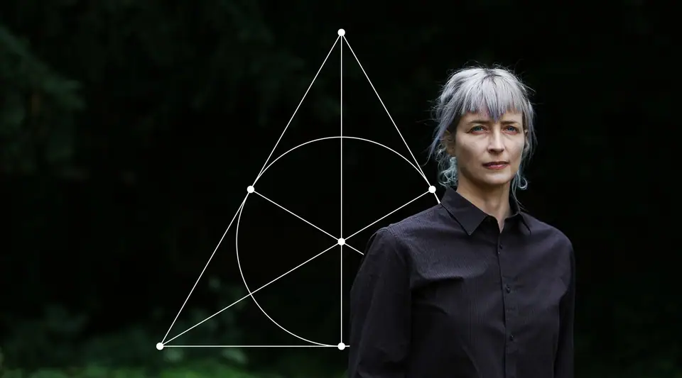
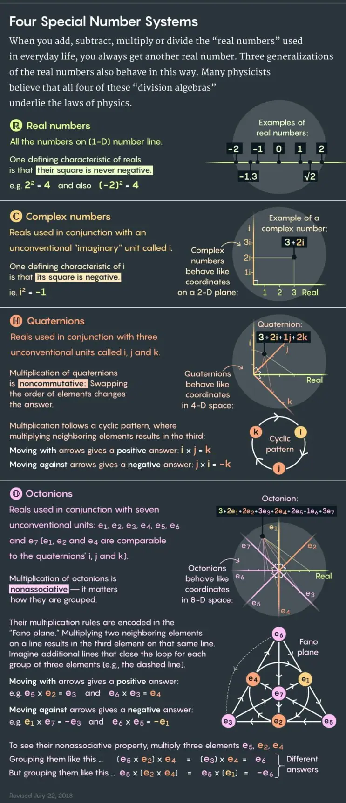

Articles ·
The Peculiar Math That Could Underlie the Laws of Nature

In 2014, a graduate student at the University of Waterloo, Canada, named Cohl Furey rented a car and drove six hours south to Pennsylvania State University, eager to talk to a physics professor there named Murat Günaydin. Furey had figured out how to build on a finding of Günaydin’s from 40 years earlier — a largely forgotten result that supported a powerful suspicion about fudamental physics and its relationship to pure math.
The suspicion, harbored by many physicists and mathematicians over the decades but rarely actively pursued, is that the peculiar panoply of forces and particles that comprise reality spring logically from the properties of eight-dimensional numbers called “octonions.”
As numbers go, the familiar real numbers — those found on the number line, like 1, π and -83.777 — just get things started. Real numbers can be paired up in a particular way to form “complex numbers,” first studied in 16th-century Italy, that behave like coordinates on a 2-D plane. Adding, subtracting, multiplying and dividing is like translating and rotating positions around the plane. Complex numbers, suitably paired, form 4-D “quaternions,” discovered in 1843 by the Irish mathematician William Rowan Hamilton, who on the spot ecstatically chiseled the formula into Dublin’s Broome Bridge. John Graves, a lawyer friend of Hamilton’s, subsequently showed that pairs of quaternions make octonions: numbers that define coordinates in an abstract 8-D space.
There the game stops. Proof surfaced in 1898 that the reals, complex numbers, quaternions and octonions are the only kinds of numbers that can be added, subtracted, multiplied and divided. The first three of these “division algebras” would soon lay the mathematical foundation for 20th-century physics, with real numbers appearing ubiquitously, complex numbers providing the math of quantum mechanics, and quaternions underlying Albert Einstein’s special theory of relativity. This has led many researchers to wonder about the last and least-understood division algebra. Might the octonions hold secrets of the universe?
“Octonions are to physics what the Sirens were to Ulysses,” Pierre Ramond, a particle physicist and string theorist at the University of Florida, said in an email.
Günaydin, the Penn State professor, was a graduate student at Yale in 1973 when he and his advisor Feza Gürsey found a surprising link between the octonions and the strong force, which binds quarks together inside atomic nuclei. An initial flurry of interest in the finding didn’t last. Everyone at the time was puzzling over the Standard Model of particle physics — the set of equations describing the known elementary particles and their interactions via the strong, weak and electromagnetic forces (all the fundamental forces except gravity). But rather than seek mathematical answers to the Standard Model’s mysteries, most physicists placed their hopes in high-energy particle colliders and other experiments, expecting additional particles to show up and lead the way beyond the Standard Model to a deeper description of reality. They “imagined that the next bit of progress will come from some new pieces being dropped onto the table, [rather than] from thinking harder about the pieces we already have,” said Latham Boyle, a theoretical physicist at the Perimeter Institute of Theoretical Physics in Waterloo, Canada.
Decades on, no particles beyond those of the Standard Model have been found. Meanwhile, the strange beauty of the octonions has continued to attract the occasional independent-minded researcher, including Furey, the Canadian grad student who visited Günaydin four years ago. Looking like an interplanetary traveler, with choppy silver bangs that taper to a point between piercing blue eyes, Furey scrawled esoteric symbols on a blackboard, trying to explain to Günaydin that she had extended his and Gürsey’s work by constructing an octonionic model of both the strong and electromagnetic forces.
“Communicating the details to him turned out to be a bit more of a challenge than I had anticipated, as I struggled to get a word in edgewise,” Furey recalled. Günaydin had continued to study the octonions since the ’70s by way of their deep connections to string theory, M-theory and supergravity — related theories that attempt to unify gravity with the other fundamental forces. But his octonionic pursuits had always been outside the mainstream. He advised Furey to find another research project for her Ph.D., since the octonions might close doors for her, as he felt they had for him.
But Furey didn’t — couldn’t — give up. Driven by a profound intuition that the octonions and other division algebras underlie nature’s laws, she told a colleague that if she didn’t find work in academia she planned to take her accordion to New Orleans and busk on the streets to support her physics habit. Instead, Furey landed a postdoc at the University of Cambridge in the United Kingdom. She has since produced a number of results connecting the octonions to the Standard Model that experts are calling intriguing, curious, elegant and novel. “She has taken significant steps toward solving some really deep physical puzzles,” said Shadi Tahvildar-Zadeh, a mathematical physicist at Rutgers University who recently visited Furey in Cambridge after watching an online series of lecture videos she made about her work.
Furey has yet to construct a simple octonionic model of all Standard Model particles and forces in one go, and she hasn’t touched on gravity. She stresses that the mathematical possibilities are many, and experts say it’s too soon to tell which way of amalgamating the octonions and other division algebras (if any) will lead to success.
“She has found some intriguing links,” said Michael Duff, a pioneering string theorist and professor at Imperial College London who has studied octonions’ role in string theory. “It’s certainly worth pursuing, in my view. Whether it will ultimately be the way the Standard Model is described, it’s hard to say. If it were, it would qualify for all the superlatives — revolutionary, and so on.”
Peculiar Numbers
I met Furey in June, in the porter’s lodge through which one enters Trinity Hall on the bank of the River Cam. Petite, muscular, and wearing a sleeveless black T-shirt (that revealed bruises from mixed martial arts), rolled-up jeans, socks with cartoon aliens on them and Vegetarian Shoes–brand sneakers, in person she was more Vancouverite than the otherworldly figure in her lecture videos. We ambled around the college lawns, ducking through medieval doorways in and out of the hot sun. On a different day I might have seen her doing physics on a purple yoga mat on the grass.
Furey, who is 39, said she was first drawn to physics at a specific moment in high school, in British Columbia. Her teacher told the class that only four fundamental forces underlie all the world’s complexity — and, furthermore, that physicists since the 1970s had been trying to unify all of them within a single theoretical structure. “That was just the most beautiful thing I ever heard,” she told me, steely-eyed. She had a similar feeling a few years later, as an undergraduate at Simon Fraser University in Vancouver, upon learning about the four division algebras. One such number system, or infinitely many, would seem reasonable. “But four?” she recalls thinking. “How peculiar.”
After breaks from school spent ski-bumming, bartending abroad and intensely training as a mixed martial artist, Furey later met the division algebras again in an advanced geometry course and learned just how peculiar they become in four strokes. When you double the dimensions with each step as you go from real numbers to complex numbers to quaternions to octonions, she explained, “in every step you lose a property.” Real numbers can be ordered from smallest to largest, for instance, “whereas in the complex plane there’s no such concept.” Next, quaternions lose commutativity; for them, a × b doesn’t equal b × a. This makes sense, since multiplying higher-dimensional numbers involves rotation, and when you switch the order of rotations in more than two dimensions you end up in a different place. Much more bizarrely, the octonions are nonassociative, meaning (a × b) × c doesn’t equal a × (b × c). “Nonassociative things are strongly disliked by mathematicians,” said John Baez, a mathematical physicist at the University of California, Riverside, and a leading expert on the octonions. “Because while it’s very easy to imagine noncommutative situations — putting on shoes then socks is different from socks then shoes — it’s very difficult to think of a nonassociative situation.” If, instead of putting on socks then shoes, you first put your socks into your shoes, technically you should still then be able to put your feet into both and get the same result. “The parentheses feel artificial.”
The octonions’ seemingly unphysical nonassociativity has crippled many physicists’ efforts to exploit them, but Baez explained that their peculiar math has also always been their chief allure. Nature, with its four forces batting around a few dozen particles and anti-particles, is itself peculiar. The Standard Model is “quirky and idiosyncratic,” he said.
In the Standard Model, elementary particles are manifestations of three “symmetry groups” — essentially, ways of interchanging subsets of the particles that leave the equations unchanged. These three symmetry groups, SU(3), SU(2) and U(1), correspond to the strong, weak and electromagnetic forces, respectively, and they “act” on six types of quarks, two types of leptons, plus their anti-particles, with each type of particle coming in three copies, or “generations,” that are identical except for their masses. (The fourth fundamental force, gravity, is described separately, and incompatibly, by Einstein’s general theory of relativity, which casts it as curves in the geometry of space-time.)
Sets of particles manifest the symmetries of the Standard Model in the same way that four corners of a square must exist in order to realize a symmetry of 90-degree rotations. The question is, why this symmetry group — SU(3) × SU(2) × U(1)? And why this particular particle representation, with the observed particles’ funny assortment of charges, curious handedness and three-generation redundancy? The conventional attitude toward such questions has been to treat the Standard Model as a broken piece of some more complete theoretical structure. But a competing tendency is to try to use the octonions and “get the weirdness from the laws of logic somehow,” Baez said.
Furey began seriously pursuing this possibility in grad school, when she learned that quaternions capture the way particles translate and rotate in 4-D space-time. She wondered about particles’ internal properties, like their charge. “I realized that the eight degrees of freedom of the octonions could correspond to one generation of particles: one neutrino, one electron, three up quarks and three down quarks,” she said — a bit of numerology that had raised eyebrows before. The coincidences have since proliferated. “If this research project were a murder mystery,” she said, “I would say that we are still in the process of collecting clues.”
The Dixon Algebra
To reconstruct particle physics, Furey uses the product of the four division algebras, R⊗C⊗H⊗O (R for reals, C for complex numbers, H for quaternions and O for octonions) — sometimes called the Dixon algebra, after Geoffrey Dixon, a physicist who first took this tack in the 1970s and ’80s before failing to get a faculty job and leaving the field. (Dixon forwarded me a passage from his memoirs: “What I had was an out-of-control intuition that these algebras were key to understanding particle physics, and I was willing to follow this intuition off a cliff if need be. Some might say I did.”)
Whereas Dixon and others proceeded by mixing the division algebras with extra mathematical machinery, Furey restricts herself; in her scheme, the algebras “act on themselves.” Combined as R⊗C⊗H⊗O, the four number systems form a 64-dimensional abstract space. Within this space, in Furey’s model, particles are mathematical “ideals”: elements of a subspace that, when multiplied by other elements, stay in that subspace, allowing particles to stay particles even as they move, rotate, interact and transform. The idea is that these mathematical ideals are the particles of nature, and they manifest the symmetries of R⊗C⊗H⊗O.
As Dixon knew, the algebra splits cleanly into two parts: C⊗H and C⊗O, the products of complex numbers with quaternions and octonions, respectively (real numbers are trivial). In Furey’s model, the symmetries associated with how particles move and rotate in space-time, together known as the Lorentz group, arise from the quaternionic C⊗H part of the algebra. The symmetry group SU(3) × SU(2) × U(1), associated with particles’ internal properties and mutual interactions via the strong, weak and electromagnetic forces, come from the octonionic part, C⊗O.
Günaydin and Gürsey, in their early work, already found SU(3) inside the octonions. Consider the base set of octonions, 1, e1, e2, e3, e4, e5, e6and e7, which are unit distances in eight different orthogonal directions: They respect a group of symmetries called G2, which happens to be one of the rare “exceptional groups” that can’t be mathematically classified into other existing symmetry-group families. The octonions’ intimate connection to all the exceptional groups and other special mathematical objects has compounded the belief in their importance, convincing the eminent Fields medalist and Abel Prize–winning mathematician Michael Atiyah, for example, that the final theory of nature must be octonionic. “The real theory which we would like to get to,” he said in 2010, “should include gravity with all these theories in such a way that gravity is seen to be a consequence of the octonions and the exceptional groups.” He added, “It will be hard because we know the octonions are hard, but when you’ve found it, it should be a beautiful theory, and it should be unique.”
Holding e7 constant while transforming the other unit octonions reduces their symmetries to the group SU(3). Günaydin and Gürsey used this fact to build an octonionic model of the strong force acting on a single generation of quarks.

Furey has gone further. In her most recent published paper, which appeared in May in The European Physical Journal C, she consolidated several findings to construct the full Standard Model symmetry group, SU(3) × SU(2) × U(1), for a single generation of particles, with the math producing the correct array of electric charges and other attributes for an electron, neutrino, three up quarks, three down quarks and their anti-particles. The math also suggests a reason why electric charge is quantized in discrete units — essentially, because whole numbers are.
However, in that model’s way of arranging particles, it’s unclear how to naturally extend the model to cover the full three particle generations that exist in nature. But in another new paper that’s now circulating among experts and under review by Physical Letters B, Furey uses C⊗O to construct the Standard Model’s two unbroken symmetries, SU(3) and U(1). (In nature, SU(2) × U(1) is broken down into U(1) by the Higgs mechanism, a process that imbues particles with mass.) In this case, the symmetries act on all three particle generations and also allow for the existence of particles called sterile neutrinos — candidates for dark matter that physicists are actively searching for now. “The three-generation model only has SU(3) × U(1), so it’s more rudimentary,” Furey told me, pen poised at a whiteboard. “The question is, is there an obvious way to go from the one-generation picture to the three-generation picture? I think there is.”
This is the main question she’s after now. The mathematical physicists Michel Dubois-Violette, Ivan Todorov and Svetla Drenska are also trying to model the three particle generations using a structure that incorporates octonions called the exceptional Jordan algebra. After years of working solo, Furey is beginning to collaborate with researchers who take different approaches, but she prefers to stick with the product of the four division algebras, R⊗C⊗H⊗O, acting on itself. It’s complicated enough and provides flexibility in the many ways it can be chopped up. Furey’s goal is to find the model that, in hindsight, feels inevitable and that includes mass, the Higgs mechanism, gravity and space-time.
Already, there’s a sense of space-time in the math. She finds that all multiplicative chains of elements of R⊗C⊗H⊗O can be generated by 10 matrices called “generators.” Nine of the generators act like spatial dimensions, and the 10th, which has the opposite sign, behaves like time. String theory also predicts 10 space-time dimensions — and the octonions are involved there as well. Whether or how Furey’s work connects to string theory remains to be puzzled out.
So does her future. She’s looking for a faculty job now, but failing that, there’s always the ski slopes or the accordion. “Accordions are the octonions of the music world,” she said — “tragically misunderstood.” She added, “Even if I pursued that, I would always be working on this project.”
The Final Theory
Furey mostly demurred on my more philosophical questions about the relationship between physics and math, such as whether, deep down, they are one and the same. But she is taken with the mystery of why the property of division is so key. She also has a hunch, reflecting a common allergy to infinity, that R⊗C⊗H⊗O is actually an approximation that will be replaced, in the final theory, with another, related mathematical system that does not involve the infinite continuum of real numbers.
That’s just intuition talking. But with the Standard Model passing tests to staggering perfection, and no enlightening new particles materializing at the Large Hadron Collider in Europe, a new feeling is in the air, both unsettling and exciting, ushering a return to whiteboards and blackboards. There’s the burgeoning sense that “maybe we have not yet finished the process of fitting the current pieces together,” said Boyle, of the Perimeter Institute. He rates this possibility “more promising than many people realize,” and said it “deserves more attention than it is currently getting, so I am very glad that some people like Cohl are seriously pursuing it.”
Boyle hasn’t himself written about the Standard Model’s possible relationship to the octonions. But like so many others, he admits to hearing their siren song. “I share the hope,” he said, “and even the suspicion, that the octonions may end up playing a role, somehow, in fundamental physics, since they are very beautiful.”
Correction July 22, 2018: A previous version of the “Four Special Number Systems” graphic noted that e1, e2 and e3 are comparable to the quaternions’ i, j and k. In the representation of the Fano plane in the graphic, e1, e2 and e4 are comparable to the quaternions’ i, j and k.
This article was reprinted on Wired.com.
Migrated from the AUASS website archive as published, with the formatting tidied.